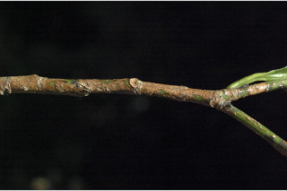
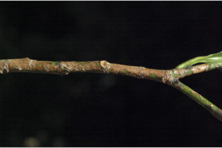

Trees up to 5 m tall.
5 ಮೀ. ಎತ್ತರದವರೆಗೆ ಬೆಳೆಯುವ ಮರಗಳು.
5 മീറ്റര് വരെ ഉയരമുള്ള മരങ്ങള്
மரங்கள், 5 மீ. உயரம் வரை வளரக்கூடியது.
Branchlets terete, glabrous.
ಕಿರುಕೊಂಬೆಗಳು ದುಂಡಾಗಿದ್ದು ರೋಮರಹಿತವಾಗಿರುತ್ತವೆ.
അരോമിലമായ, ഉരുണ്ട ഉപശാഖകള്.
சிறிய நுனிக்கிளைகள் குறுக்குவெட்டுத் தோற்றத்தில் வளையமானது, உரோமங்களற்றது.
Latex white, profuse.
ಸಸ್ಯ ಕ್ಷೀರ ಬೆಳ್ಳಗಿದ್ದು ವಿಫುಲವಾಗಿರುತ್ತದೆ.
വെളുത്ത നിറത്തില് ധാരാളമുള്ള സ്രവം.
வெள்ளை நிறமான பால் அதிகளவில் சுரக்ககூடியது
Leaves simple, opposite, decussate; stipule caducous; petiole 0.7-1 cm long, planoconvex in cross section, glabrous; lamina up to 15.2 x 3.8 cm, oblanceolate to elliptic-lanceolate, chartaceous, apex acuminate, base acute, margin crenulate; secondary_nerves 10-16 pairs; tertiary_nerves distantly obliquely_percurrent.
ಎಲೆಗಳು ಸರಳವಾಗಿದ್ದು ಅಭಿಮುಖಿ-ಕತ್ತರಿಯಾಕಾರದ ಮಾದರಿ ಜೋಡನಾ ವ್ಯವಸ್ಥೆಯಲ್ಲಿರುತ್ತವೆ; ಕಾವಿನೆಲೆಗಳು ಉದುರಿ ಹೋಗುವ ರೀತಿಯವುಗಳಾಗಿರುತ್ತವೆ. ತೊಟ್ಟುಗಳು ಅಂದಾಜು 0.7 – 1 ಸೆಂ.ಮೀ.ಉದ್ದವಿದ್ದು ಅಡ್ಡ ಸೀಳಿದಾಗ ಸಪಾಟ ಪೀನ ಮಧ್ಯದ ಆಕಾರದಲ್ಲಿರುತ್ತವೆ ಮತ್ತು ರೋಮರಹಿತವಾಗಿರುತ್ತವೆ;ಪತ್ರಗಳು 15.2 X 3.8 ಸೆಂ. ಮೀ. ಗಾತ್ರ, ಬುಗುರಿ-ಭರ್ಜಿಯಿಂದ ಅಂಡವೃತ್ತ – ಭರ್ಜಿಯವರೆಗಿನ ಆಕಾರ ಹೊಂದಿರುತ್ತವೆ; ಪತ್ರಗಳ ತುದಿ ಕ್ರಮೇಣ ಚೂಪಾಗುವ ಮಾದರಿಯಲ್ಲಿದ್ದು ಬುಡ ಚೂಪಾಗಿರುತ್ತವೆ;ಅಂಚು ಸೂಕ್ಷ್ಮ ದಂತಿತವಾಗಿರುತ್ತದೆ;ಮೇಲ್ಮೈ ಕಾಗದವನ್ನೋಲುವ ಮಾದರಿಯಲ್ಲಿರುತ್ತದೆ; ಎರಡನೇ ದರ್ಜೆಯ ನಾಳಗಳು 10 ರಿಂದ 16 ಜೋಡಿಗಳಿರುತ್ತವೆ; ಮೂರನೇ ದರ್ಜೆಯ ನಾಳಗಳು ಅಂತರ ಹೊಂದಿದ್ದು ಓರೆಯಾಗಿದ್ದು ಎಲೆ ದಿಂಡಿಗೆ ಅಡ್ಡವಾಗಿ ಕೂಡುವಂತವು.
ലഘുവായ ഇലകള് സമ്മുഖ ഡെക്കുസേറ്റ് ക്രമത്തിലാണ്; എളുപ്പം കൊഴിഞ്ഞു വീഴുന്ന അനുപര്ണ്ണങ്ങള്; അരോമിലമായ, ഛേദത്തില് ഒരു ഭാഗം പരന്നും മറുഭാഗം ഉരുണ്ടുമിരിക്കുന്ന ഘടനയുള്ള ഇലഞെട്ടിന് 0.7 സെ.മീ. മുതല് 1 സെ.മീ. വരെ നീളം; പത്രഫലകത്തിന് 15.2 സെ.മീ. വരെ നീളവും 3.8 സെ.മീ. വരെ വീതിയുമാണ്, ആകൃതി അപകുന്താകാരം തൊട്ട് ദീര്ഘവൃത്തീയ-കുന്താകാരം വരെയാകാം, കടലാസ് പോലത്തെ പ്രകൃതം, ദീര്ഘ പത്രാഗ്രം, നിശിത പത്രാധാരം, ദന്തുരമായ അരികുകള്; ദ്വിതീയ ഞരമ്പുകള് 10 മുതല് 16 വരെ ജോഡികള്; വിദൂരത്തായി ചരിഞ്ഞ പെര്കറന്റ് രീതിയിലുള്ള ത്രിതീയ ഞരമ്പുകള്.
இலைகள் தனித்தவை, எதிரடுக்கமானவை, குறுக்குமறுக்கமானவை; இலையடிச்செதில் எளிதில் உதிரக்கூடியது; இலைக்காம்பு 0.7-1 செ.மீ. நீளமானது, குறுக்குவெட்டுத் தோற்றத்தில் பிளேனோகான்வக்ஸ், உரோமங்களற்றது; இலை அலகு 15.2 X 3.8 செ.மீ., தலைகீழ் ஈட்டி வடிவம் முதல் நீள்வட்டம்-ஈட்டி வடிவானது, சார்ட்டேசியஸ், அலகின் நுனி அதிக்கூரியது, அலகின் தளம் கூரியது, அலகின் விளிம்பு பிறை வடிவ பற்களுடையது; இரண்டாம் நிலை நரம்புகள் 10-16 ஜோடிகள்; மூன்றாம் நிலை நரம்புகள் அகன்ற சாய்ந்த பெர்க்கரண்ட்.
Flowers unisexual, dioecious; male flowers in slender axillary spikes, ca. 5 cm long; female few flowered axillary racemes.
ಹೂಗಳು ಏಕಲಿಂಗಿಗಳಾಗಿರುತ್ತವೆ ; ಗಂಡು ಮತ್ತು ಹೆಣ್ಣು ಹೂಗಳು ಪ್ರತ್ಯೇಕ ಸಸ್ಯಗಳಲ್ಲಿರುತ್ತವೆ. ಗಂಡು ಹೂಗಳು ಅಕ್ಷಾಕಂಕುಳಿನಲ್ಲಿನ ತೆಳುವಾದ ಕದಿರು ಮಂಜರಿಯಲ್ಲಿರುತ್ತವೆ; ಹೆಣ್ಣು ಹೂಗಳು ಅಕ್ಷಾಕಂಕುಳಿನಲ್ಲಿನ ಕೆಲವು ಹೂಗಳುಳ್ಳ ಮಧ್ಯಾಭಿಸರ ಪುಷ್ಪಮಂಜರಿಯಲ್ಲಿರುತ್ತವೆ.
പൂക്കള് ഏകലിംഗികളാണ്, ഡയീഷ്യസും; ആണ് പൂക്കള് ഏതാണ്ട് 5 സെ.മീ. നീളമുള്ള നേര്ത്ത, കക്ഷീയ സ്പൈക്കുകളിലുണ്ടാകുന്നു; പെണ്പൂക്കള് കുറച്ചു മാത്രം എണ്ണമുള്ള കക്ഷീയ റസീമുകളിലുണ്ടാകുന്നു.
மலர்கள் ஓர்பாலானவை, ஈரகம் கொண்டவை; ஆண்மலர்கள் மெலிந்த ஸ்பைக் வகை மஞ்சரி, இலைக்கோணங்களில் அமைந்தவை, 5 செ.மீ. நீளமானது; பெண்மலர்கள் குறைந்தளவு மலர்கள் கொண்ட ரெசீம் வகை மஞ்சரி, இலைக்கோணங்களில் அமைந்தவை
Capsule, trilobed; seeds 3 subglobose.
ಸಂಪುಟ ಫಲಗಳು 3-ಹಾಲೆಗಳ ಸಮೇತವಿರುತ್ತವೆ ಮತ್ತು 3 ಉಪ-ಗೋಳಾಕಾರದ ಬೀಜಗಳನ್ನು ಒಳಗೊಂಡಿರುತ್ತವೆ.
3 വീതം ഉപഗോളാകാര വിത്തുകളുള്ള കായ, ത്രികര്ണ്ണിതമായ കാപ്സ്യൂള് ആണ്.
வெடிகனி (கேப்சூல்), மூன்று பக்கங்களுடையது; விதைகள் 3, கோளவடிவானது.


 
